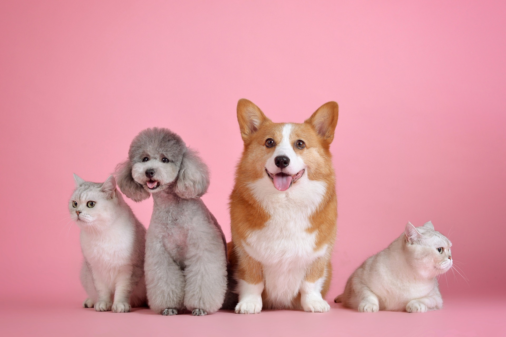
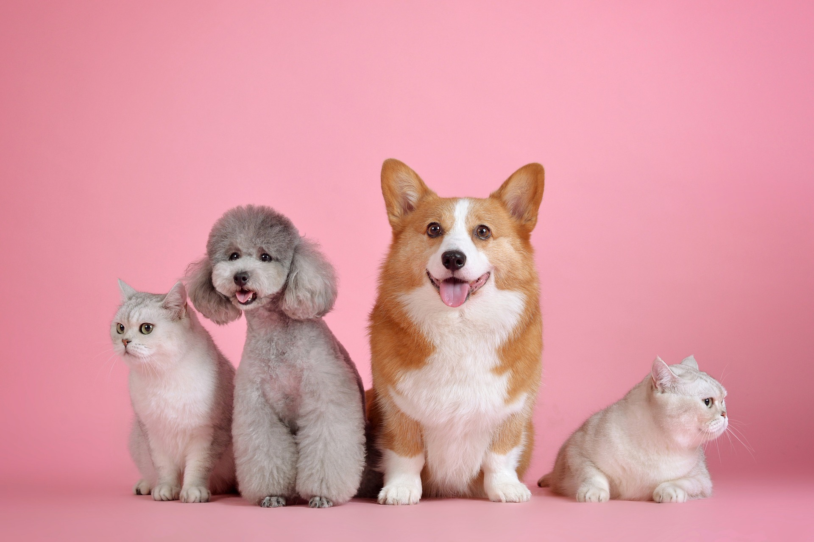
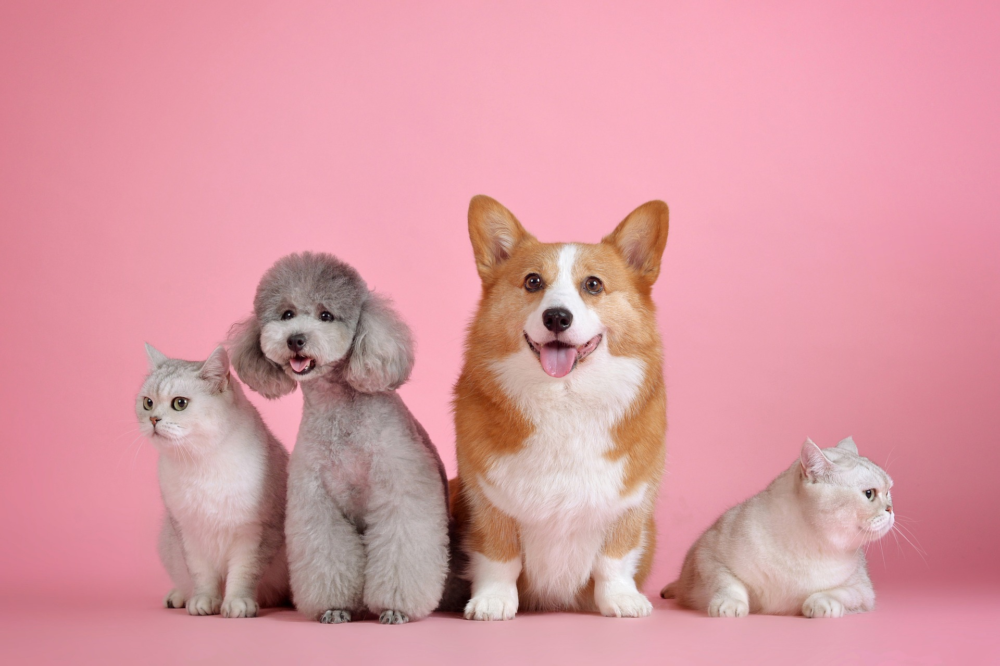
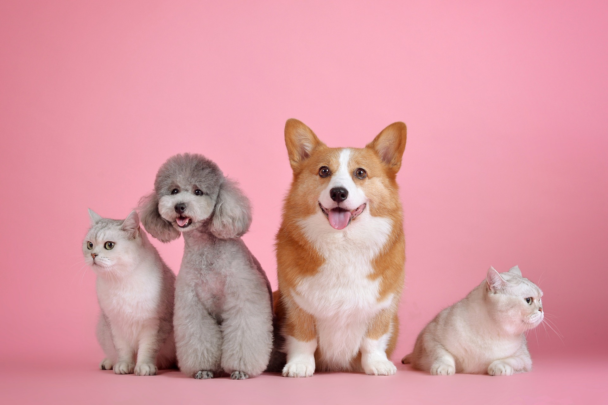

de 22 a 26 de agosto de 2022
Adopet
Largo do Machado - RJ
Boas-vindas! Que tal mudar sua vida adotando seu novo melhor amigo? Vem com a gente!
 


Amora
idade: 2 meses
porte: grande
características: carinhosa e comilona

Dunga
idade: 2 anos
porte: médio
características: calmo e educado
Felícia
idade: 4 meses
porte: filhote
características: ativa e carinhosa

Fiona
idade: 6 meses
porte: pequeno
características: curiosa e companheira

Lua
idade: 1 ano
porte: pequeno
características: dorminhoca e cinéfila

Sid
idade: 6 meses
porte: médio
características: corredor e pulador

Sirius
idade: 1 ano e meio
porte: grande
características: lambedor e animado

Yoda
idade: 6 meses
porte: médio
características: calmo e companheiro

Zelda
idade: 8 meses
porte: médio
características: curiosa e caçadora
Praça Largo do Machado